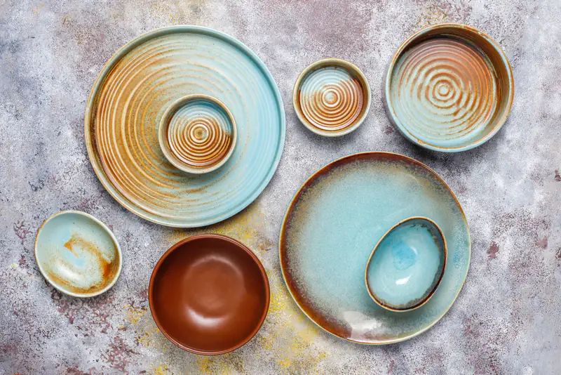

Köszönöm az érdeklődésed!
Örülök, hogy érdekel az Agyagpad. Nézz körül a műhelyben, vagy írd meg, melyik programot próbálnád ki szívesen!
A programok részleteit és a szabad időpontokat személyesen egyeztetem veled.

A műhelyből a mindennapokba
Szerezz inspirációt!
Minden forma egy ötlettel kezdődik. Fedezd fel a kézzel készült bögréket, tálakat és vázákat, és hangolódj rá az alkotás örömére!
Felfedezem az alkotásokat